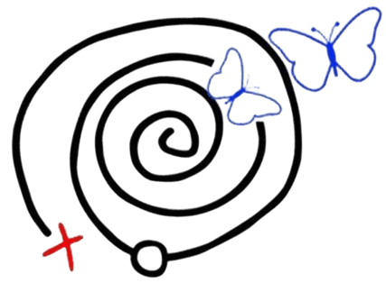
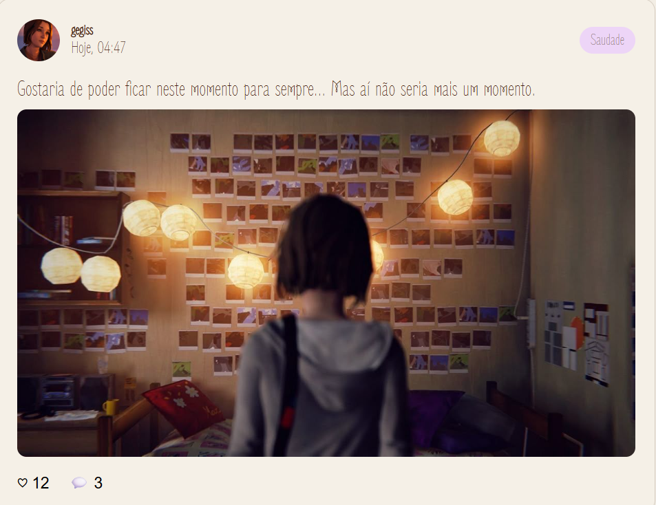

Cada escolha molda o futuro da sua história.
O LisBlog é um diário virtual que te permite registrar momentos,
compartilhar sentimentos e guardar tudo que vale a pena ser lembrado.

O LisBlog é um diário virtual que te permite registrar momentos,
compartilhar sentimentos e guardar tudo que vale a pena ser lembrado.

Crie um post sobre o que você está vivendo
Escolha o sentimento que mais combine com aquele momento
Marque como especial e salve no seu painel de memórias

Volte no tempo e reveja os momentos que mais te marcaram
Um feed de histórias reais da comunidade LisBlog. Cada post carrega um sentimento, uma memória, um pedaço de alguém.

Crie sua conta e comece a registrar seus momentos!
Criar minha conta ➢